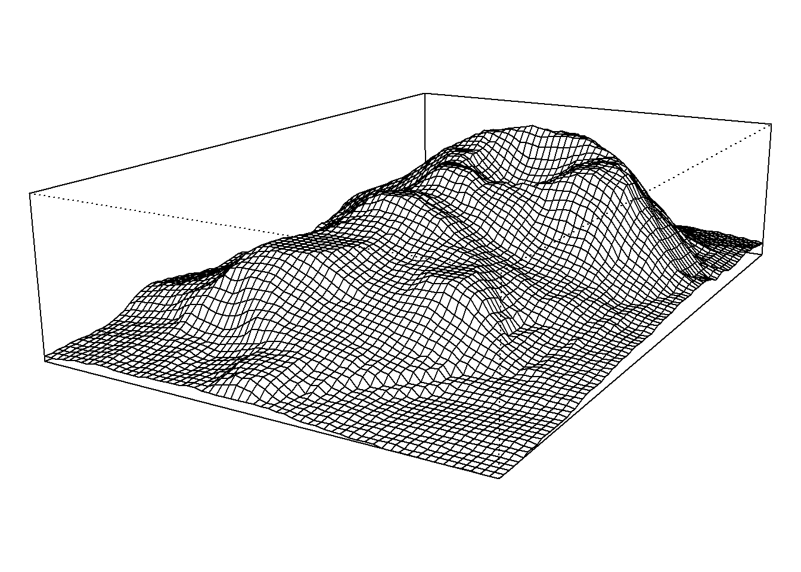
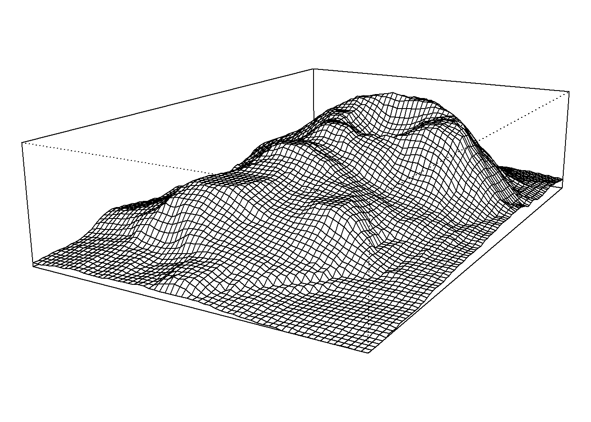

Guitar bookdown
大鹏
2017-04-05
1 最真的梦
最真的梦，就是把吉他谱跟R作图弄到一起。
啥？弄到一起有什么用？
呃……容我清清脑子想一想……

(前奏)
只有在夜深
我和你才能 敞开灵魂 去释放天真
把温柔的吻 在夜半时分 化成歌声 依偎你心门
我祈求星辰 月儿来作证 用尽一生 也愿意去等
终会有一天 把心愿完成 带着你飞奔找永恒
最真的梦，就是把吉他谱跟R作图弄到一起。
啥？弄到一起有什么用？
呃……容我清清脑子想一想……

(前奏)
只有在夜深
我和你才能 敞开灵魂 去释放天真
把温柔的吻 在夜半时分 化成歌声 依偎你心门
我祈求星辰 月儿来作证 用尽一生 也愿意去等
终会有一天 把心愿完成 带着你飞奔找永恒